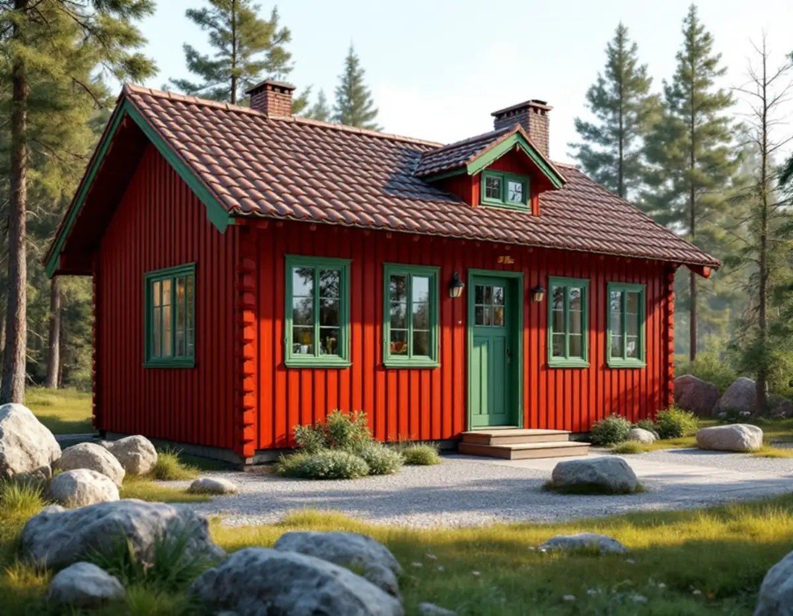
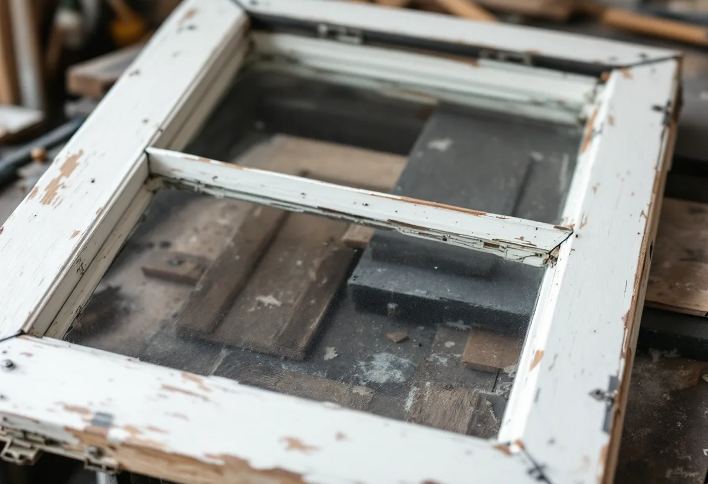
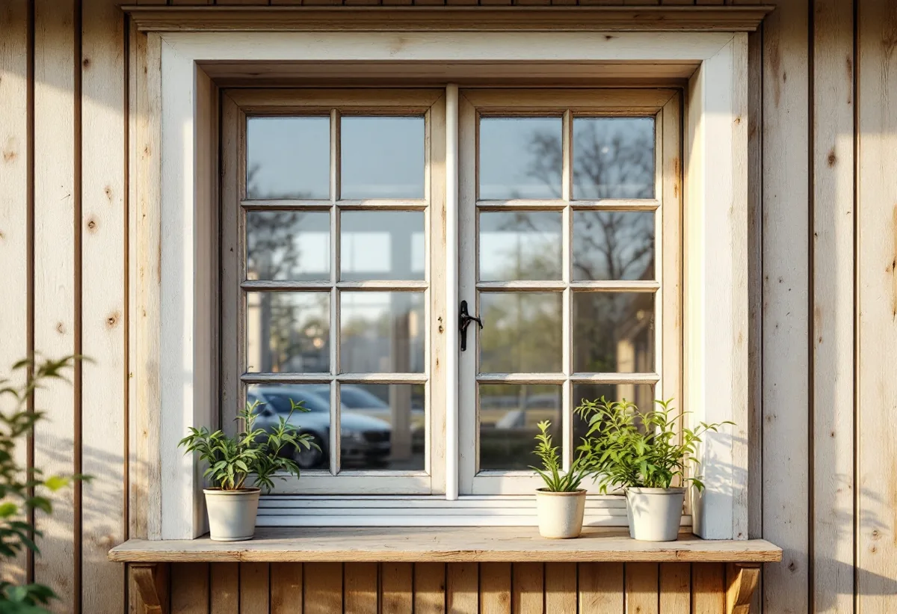

Platsbesök
Gratis genomgång av bågar, beslag och karmar.
I östra Tyresö styckades Tyresögodsets marker till fritidshus, och många av dem används i dag året runt. När ett sådant hus byggs om är det lätt att byta alla fönster, men de gamla bågarna går ofta att rädda. Geal Entreprenad AB renoverar fönster i Tyresö och kompletterar dem så att de klarar ett permanent boende.

Stockholms läns museums kulturmiljöunderlag för Solberga och en del av Raksta berättar att Lagergrens söner bildade ett bolag för att sälja tomter till fritidshus på Tyresögodsets mark. Efter andra världskriget ökade exploateringstrycket, och vid slutet av 1950-talet hade nästan hälften av det gamla godset bebyggts med fritidshus. För Solberga fastställdes en byggnadsplan 1952, som rapporten beskriver som i huvudsak gällande än i dag.
Rapporten skriver att fler har bosatt sig permanent i området och att permanentningen pågår: en del hus är helt ombyggda eller nybyggda, medan andra är välbevarade fritidshus från 1950-talet. Ett exempel som nämns har röd stockpanel med gröna lister och foder och ett tak av tvåkupigt tegel.

Rapporten beskriver också de äldre husen i området i detalj. I Strömstugan har fönstren tre rutor per båge med pressade hörnjärn, som var vanliga under 1900-talets första hälft, och bågarna är kopplade med raka uppställningsbeslag av 1800-talstyp på insidan. I ett annat hus är fönstren sexrutiga med tre rutor per båge, och flera äldre bågar har gångjärn av sen 1800-talstyp.
Beslag av det slaget är svåra att ersätta med nya av samma utseende. Vid en renovering tar vi loss, rengör och sätter tillbaka de gamla beslagen, och byter bara det som är trasigt. Riksantikvarieämbetets skrift om fönster nämner komplettering med nya beslag som en möjlighet när de gamla inte räcker.
Om huvudbyggnaden på Solberga gård skriver rapporten att den nyligen genomgått en omfattande renovering där målet varit att nå permanentstandard och samtidigt behålla de gamla detaljerna. Samma tanke fungerar för fönstren i ett fritidshus som ska bli åretruntbostad.
Riksantikvarieämbetet skriver att ett äldre fönster kan kompletteras med tätningslister eller en innerbåge för att klara dagens krav på energi och ljud. Har stugan enkla bågar kan en innerbåge göra stor skillnad vintertid. Vi bedömer på platsen vilka fönster som klarar en komplettering och vilka som behöver nya bågar. Ska fönstren bytas helt finns fönsterbyte i Tyresö.
Tyresö kommun skriver att det inte krävs bygglov inom detaljplan för att måla om ett en- och tvåbostadshus, men att detaljplanen kan ha bestämmelser om vilka färger och fasadmaterial husen får ha. För kulturhistoriskt värdefulla byggnader gäller utökad lovplikt.
Rapporten beskriver flera av de äldre husen med rödfärgad locklistpanel och vita knutar, lister, fönster och foder. När vi målar om fönster och foder behåller vi därför husets kulör, till exempel vita eller gröna lister mot en röd panel. Vill du ändra färgen kontrollerar vi detaljplanen i kommunens webbkarta först. Mer om tjänsten finns under fönsterbyte och fönsterrenovering.

Gratis genomgång av bågar, beslag och karmar.
Renovering, tätning eller innerbåge.
Bågar och beslag märks och tas loss.
Skrapning, nytt trä och omkittning.
Fönster och foder i husets kulör.
Beslagen tillbaka, justering och tätning.
Skatteverket godkänner reparation av fönster och målning av fönster i småhus som rotarbete, även i ett fritidshus som du äger och kan använda. Skatteverket skriver att bara arbetad tid på plats hos dig ger rätt till avdrag.
Avdraget är högst 30 procent av arbetskostnaden och högst 50 000 kronor per person och år. Material och resor ger inget avdrag, och Geal drar avdraget direkt på fakturan.
Antal bågar och rutor, hur mycket röta och gammalt kitt som ska åtgärdas, om glas behöver bytas, om beslag ska renoveras eller kompletteras, innerbågar eller tätningslister och om bågarna lagas på plats. Efter ett gratis platsbesök får du ett skriftligt kostnadsförslag.
Byta eller renovera fönster.
Fönsterbyte i Stockholm →Takbyte, takbesiktning och plåtarbeten.
Takläggare i Tyresö →Solberga, Raksta och Brevik.
Takrenovering i Tyresö →VA-anslutning, vattenmätare och dagvatten.
Attefallshus i Tyresö →LTA-avlopp, källarbadrum och golvbrunn.
Badrumsrenovering i Tyresö →Startbesked, utstakning och slutbesked.
Byggföretag i Tyresö →Fritidshus som blivit helårshus på Brevikshalvön.
Fasadmålning i Tyresö →Timmerhus, fritidshus och villor i Tyresö.
Fasadrenovering i Tyresö →Gamla bågar och beslag i Tyresö.
Fönsterbyte i Tyresö →Fritidshus som byggts om till villor.
Golvläggare i Tyresö →Slipa och spara gamla brädgolv.
Golvslipning i Tyresö →Stugor som blir helårshus.
Köksrenovering i Tyresö →Rödfärgade hus, stugor och interiörer i Tyresö.
Målare i Tyresö →Stuprör, rännor och beslag i Tyresö.
Plåtslagare i Tyresö →Stugor, altaner och tillbyggnader.
Snickare i Tyresö →Nytt tak med säker väg till skorstenen.
Takbyte i Tyresö →Ny tapet i rum med eldstad.
Tapetsering i Tyresö →Byggrätten i omvandlingsområdena.
Tillbyggnad i Tyresö →Rivningsavfallet, arkivet och eldstaden.
Totalrenovering i Tyresö →